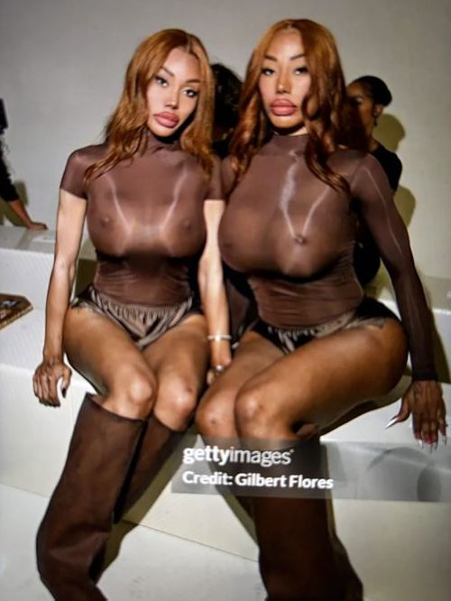
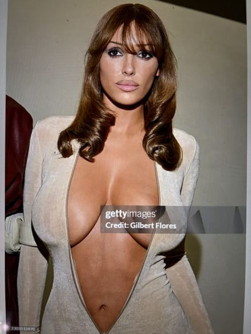
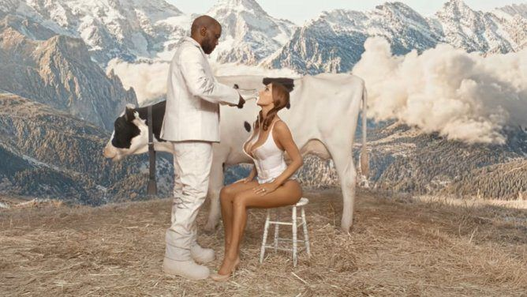
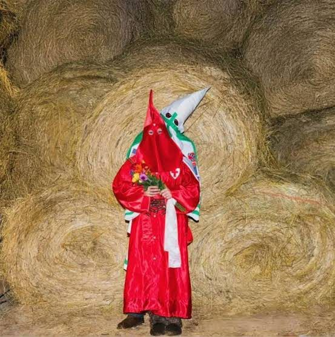
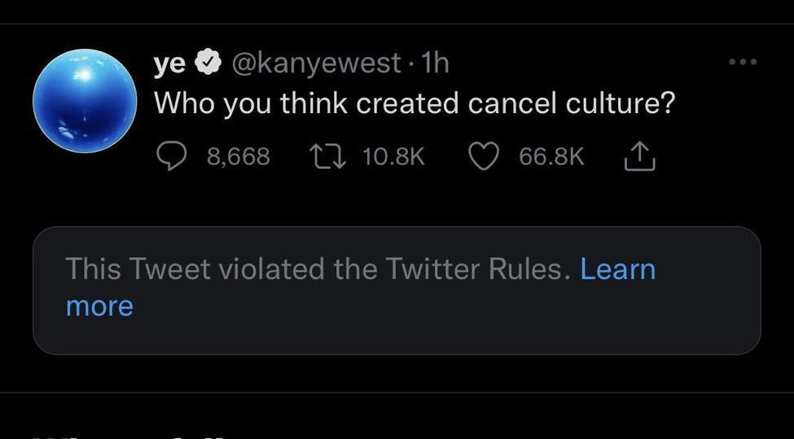
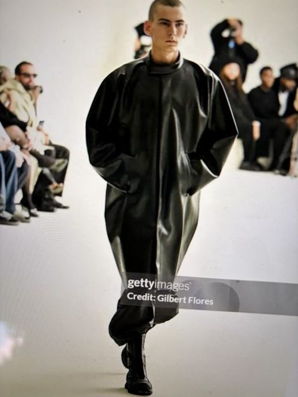

SZN1: Thoughts
what is left of a celebrity brandwhen the shared culture it was builton starts to thin?
Due to globalise markets and faster communications, as well as equalisation within institutions, we now know human nature globally. As such, Yeezy is an apt choice of brand to analyse within this context. However, its latest collection reflects general American culture. Therefore, the main questions raised throughout this essay are therefore; in a celebrity brand, what happens to the brand if the culture that it was based upon begins to disappear?

Start with the runway. A front row is a PR move in its own right. Executives and important celebrities sit there so they can be photographed watching the show. Brands that engage with whoever is in the relevant zone turn the show into a conversation. In the photos from the Yeezy runway there was no front line of celebrities at all. Beyond his children, almost nobody looked relevant or part of that social zone. Nobody was owed a seat. The point is what it does. It puts Yeezy in its own bubble, and a bubble is hard to pop out of.

The Kanye brand is no longer about clothes, or even about the culture at large. It is about whether you are with Kanye. The children together become a spectacle of loyalty, and loyalty and betrayal have always run through his
public persona. The audience that remains is the people who stayed.
What is innovative about him is not the aesthetics but a performance of instability that audiences find relatable, along with a language of God speaking through him that sits comfortably inside a strand of Black Christian culture where being a mouthpiece for God is a familiar idea. These are armchair readings, better taken as descriptions of how a persona works than as claims about the man. A persona that offers an audience something it recognizes in itself makes a stronger bond than a silhouette does.
The aesthetic is harder to pin down. One way to read Yeezy is as American trad, playing with the elements of
conservative culture, down to the songs it samples. The objection is that you cannot play with trad. The point of trad is
submission to a few big concepts, man, woman, marriage, and you do not get to fudge the details. Once you are playing with the elements you are postmodern, and he is the ultimate brand. Trad is not a system you can build, either. It is a big Other you buy into, and what circulates as trad today is closer to the version associated with Dimes Square, where people are devout and libertine at once. So a figure promoting anything traditional makes little sense given his public persona. The resemblance is still visible: a very closed couple, a fifties-style picture of roles, and an aesthetic that borrows tradition’s look without its obligations.
At the center of that picture is Bianca Censori, whom the brand treats as design

as much as person. She is a figure in the whole world of the brand, and he literally
curates how she is performed. Her silhouette reads as womanly, set against a fashion ideal of young and childlike bodies, and that fits the fifties-style picture. The milk video is the clearest example of the world being built: she milks a cow in a uniform that recalls a fast-food worker’s, and uniforms recur across the imagery.

It is easy to see this kind of world-making as subconsciously porn-adjacent, kinky in places, because sex sells. It works as a closed image system with its own symbols. Even milk is loaded. Tarantino used it as a symbol of something traditional and Nazi-like, and it is striking that a basic human function everyone shares, since everyone drank milk, can be branded with those associations in American culture. A brand that can make milk mean something is doing more than selling clothes.
There is also a protective function. The imagery can be read as a strategy to take the focus off him. In the photos Bianca is in the front line and becomes a curtain or shield for him, and the couple’s body language supports that reading. Shock imagery serves the same economy. It is attention, and some of it is boring, but boring attention still counts.
That leads to the controversies, which belong to the same machine. There were his statements about Jewish people, and a music video that played with Nazi and KKK imagery.

The question is not whether those were offensive. It is why a figure would make them. One answer is that being a great immoral figure is a way of staying relevant. People would rather be cancelled than fade away, and artists would rather engineer their own downfall
through some moral badness than admit that they stopped being cool and nobody cares. On this view he is flailing for relevance rather than fighting a moral battle, and the enemy is an illusion he created: a deliberately obvious target, picked to triangulate. That is a theory about motive, and motive cannot be checked from outside. What it does describe is a mechanism. Controversy keeps attention flowing, and it narrows the audience to the people still with him.

The wider backdrop is a celebrity machine that no longer runs the way it did in the 2000s. No celebrity is in a much better place. Jay-Z stepped back from the front line of his artistry into more executive work, and Beyoncé is more waited on than heard from. A fashion show with almost nobody from the social zone in the front row is less an anomaly than a symptom.
Put together, the argument is consistent. A celebrity whose power is left over from a more unified culture cannot count on the culture showing up. So the brand builds a world instead: a closed couple, a family front row, symbols loaded enough to guarantee attention, and a promise that you are either with it or not. Whether that is a strength or a slow fade is still open.
What is telling is that the first thing worth noticing about a fashion show was who was missing from the front row.

This piece is interpretive and draws on a recorded conversation.
Claims about real people reflect opinions and recollections from this conversation based piece, have not been independently verified, and may be inaccurate.